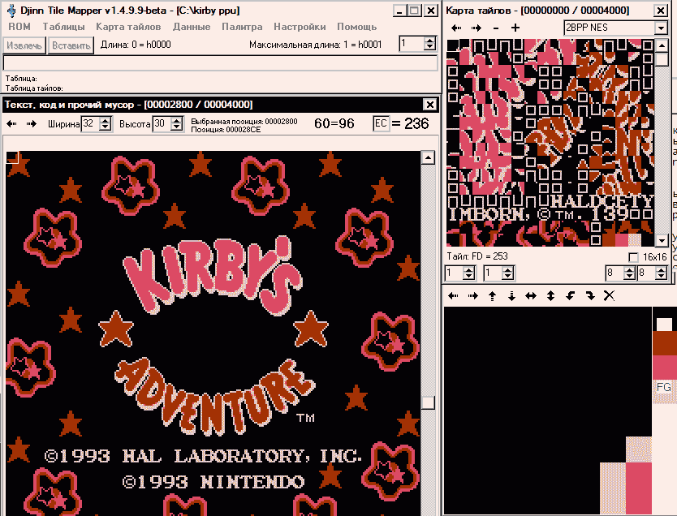

Титульные экраны NES
Опыт подсказывает, что по теме перерисовки титульных экранов написано не так много документов. Большинство из них предлагает лишь базовые основы этого дела. Я расскажу, как это можно сделать быстрее и, возможно, более качественно.
Основная проблема в перерисовке титульников связана с тем, что титульник, как и любая бэкграундовая графика в любой игре тесно связан с тайловыми картами. А особенностью тайловой карты титульника является большое число повторяющихся одинаковых данных (например, фон вокруг надписи). Для того чтобы держать такую карту в простейшем возможном (распакованном) виде нужно либо иметь ОЧЕНЬ много места в РОМе игры (не будем забывать, что карт может быть несклько десятков, а каждая будет размером 0х3С0), либо игра должна содержать только эту тайловую карту в явном виде (часто возникает ощущение, что разработчики добавляли карту впопыхах уже в процессе отладки =))
В любом случае, такие явления довольно редки. А в подавляющем большинстве случаев карты пожаты простейшим RLE.
Для неискушённых в программировании начинающих переводчиков возникает проблема: как в мессиве CHR ROM’а выделить тайлы, отвечающие за интересующую нас надпись, собрать их в нужном порядке, а потом вставить отредактированную графику назад (про редактирование тайловых карт в этом документе не будет сказано ни слова). Скажем, в документе InVerse ‘Title Screen Hacking Made Easy’ рекомендуется открыть VRAM viewer какого-нибудь эмулятора и на листочке выписывать номера тайлов, отвечающие за надпись и сопоставлять их с тайлами в графическом редакторе. Есть ещё вариант: самостоятельно копировать тайлы в отдельный пустой РОМ, а потом прибавлять к нему другие тайлы (это напоминает пазл). В конце концов, можно воспользоваться Tile Arranger’ом в Tile Layer Pro - это удобно с точки зрения обратной вставки.
Все эти способы довольно трудоёмки и муторны. А между тем, всё необходимое для удобного редактирования титульника уже есть в видео памяти приставки! Во-первых, это загруженный нужный банк CHR ROM’a, в котором содержатся нужные нам тайлы. И во-вторых, полностью распакованная тайловая карта. Остаётся только всё это сдампить. Сделать это можно с помощью любимого всеми FCEUxd ->Tools ->Hex Editor ->File ->Dump to file ->PPU Memory. Получаем всё содержимое видео памяти приставки в отдельный файл. В качестве редактора я могу порекомендовать любимый редактор тайловых карт (несмотря на то, что редактировать мы будем графику ^_^) Djinn Tile Mapper. Вместо РОМ’а открываем, естественно, наш дамп. Графика будет содержаться либо $0000-$0FFF, либо $1000-$1FFF. Для бэкграунда назначается одна область памяти, а для спрайтов - другая. Тайлы нужно смотреть в правом верхнем окне =) - не забудьте переключиться на нужный формат графики. А в окошке “Текст, код и прочий мусор” можно будет увидеть наш заветный титульник, точнее тайловую карту, обтянутую графикой.
Можно найти и визуально, однако лучше будет искать по возможным адресам нахождения карты:
Адрес Размер Название
$2000 $3C0 Тайловая карта #0
$23C0 $40 Таблица атрибутов #0
$2400 $3C0 Тайловая карта #1
$27C0 $40 Таблица атрибутов #1
$2800 $3C0 Тайловая карта #2
$2BC0 $40 Таблица атрибутов #2
$2C00 $3C0 Тайловая карта #3
$2FC0 $40 Таблица атрибутов #3Вот что должно примерно получиться:

Обратите внимание: надпись УЖЕ составлена, а для редактирования нужно кликнуть на тайле в окне “Текст, код и прочий мусор” и редактировать тайл в правом нижнем окошке (кстати, оно тут намного больше, чем в TLP).
А после окончания редактирования нужно будет сохранить файл, и уже в простом графическом редакторе скопировать изменённую графику в РОМ. Тут, разумеется, могут быть варианты: например в дампе графика может быть “наборной”. Скажем, верхняя часть из одного места CHR ROM’a, середина из другого, а низа может вообще не быть. Однако эта проблема легко преодолима визуальным поиском нужной части CHR ROM’a в оригинальном РОМ’е.
Правда, в этом методе есть и свои минусы: редактировать графику потайлово не совсем удобно, однако Djinn Tile Mapper позволяет это делать только так.
Кстати, данные о которых я говорил, содержатся не только в дампе FCEUxd, они просто обязанны быть в любом сэйв файле абсолютно любого эмулятора, только вот адреса нужных нам данных могут сильно варьироваться в зависимости от эмулятора.
Есть, правда, совсем уж продвинутый и красивый способ: достать графику и тайловые карты в разные файлы, вручную сделать Photoshop’овскую палитру и воспользоваться программой Djinn’a Map Image. Получится обычный BMP файл, который можно отредактировать где угодно, хоть в том же Photoshop’е - будет обалденно красиво ^_^ Только потом надо будет вставлять карту обратно, для чего её надо будет сжимать обратно. Да и CHR может сильно поменяться по сравнению с оригиналом.